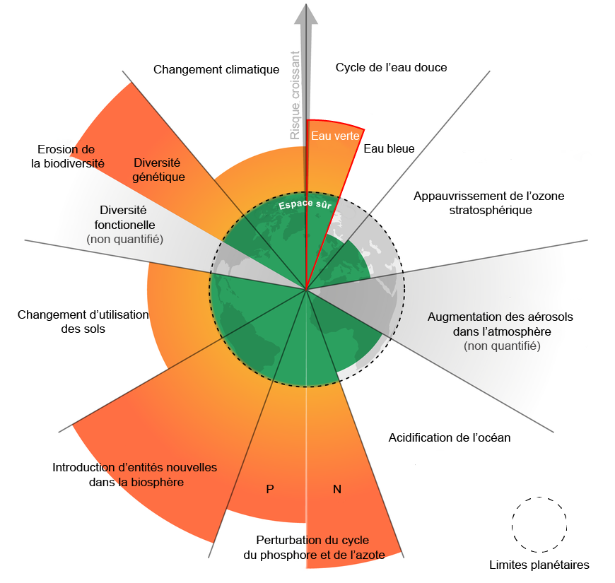

POK 3 : récap des notions clés sur l'environnement
- POK
- 2024-2025
- temps 3
- saumon
- environnement
- Clarisse Francese
Ce POK me servira à faire un récap des notions clés sur l'environnement dont j'aurai besoin lors de mon TFE en conseil dans l'environnement
POK débutant : aucun prérequis
- Transition Journey
- Cours de la filière métier TREO (Transformation Environnementale des Organisations) disponibles sur Moodle
- Economie.gouv.fr
- Ecologie.gouv.fr
- ISO.org
- Wikipédia
- Novethic
- La Fresque du Climat
📌Tâches
Sprints et horodatage
Sprints et horodatage
🏃➡️Sprints
Objectif général : avoir une meilleure culture sur l'environnement en me renseignant sur certains sujets clés et en me créant un petit récap au cours de ces 20h.
Sprint 1
- [x] regarder les cours de TREO et le site Transition Journey pour lister les sujets pertinents : 30min (30min)
- [] étudier les sujets trouvés et en faire des résumés sur GitHub : 9h30 (6h30)
Total d'heures sprint 1 : 7h, il me reste encore 3h à faire que je rattraperai au temps 2 car j'aurai moins de cours Do_It
Etude post mortem : pas encore fini
Sprint 2
- [] étudier les sujets restant et en faire des résumés sur GitHub : 5h ()
- [] faire un mini bilan carbone ou une ACV ou une étude de cas : 5h ()
Total d'heures sprint 2 : xh
Etude post mortem : blabla
⌛Horodatage
| Date | Heures passées | Indications |
|---|---|---|
| Sprint 1 | ||
| 19/01/25 | 2h | Lectures ressources et rédaction développement durable et RSE, limites planétaires et théorie du donut |
| 25/01/25 | 2h | Lectures ressources et rédaction Instances et accords importants, GES bilan carbone et décarbonation |
| 26/01/25 | 3h | Lectures ressources et rédaction CSRD, ESRS, économie et environnement |
| Sprint 2 | ||
| Date | xh | Truc |
Sommaire
1️⃣POK : sprint 1
J'ai commencé par parcourir sur Moodle les ressources de la filière métier TREO (Transformation Environnementale des Organisations) et j'ai regardé le site Transition Journey qui m'a été recommandé par Inès. J'ai ainsi listé plein de notions que je veux résumer dans ce POK. Puis j'ai creusé ces notions à partir de ces sites, wikipédia, ceux du gouvernement, d'autres sites web etc afin de me faire mon propre récap des notions essentielles sur l'environnement.
Instances et accords importants
⚡L'ADEME (1991) est Agence de l'environnement et de la maîtrise de l'énergie. C'est un établissement public à caractère industriel et commercial français dont la vocation est de faire des opérations de protection de l'environnement et surtout de maîtrise de l'énergie. Elle affiche également le nom d'Agence de la transition écologique depuis juin 2020.
🧑🔬Le GIEC (1988) est le Groupe d'experts intergouvernemental sur l'évolution du climat. C'est l'organe des Nations unies chargé de l'évaluation objective de la recherche scientifique sur le changement climatique. Il produit des rapports d'évaluation complets (le 6ème en 2023) qui servent de référence pour orienter les politiques climatiques à l'échelle mondiale.
🗼L'Accord de Paris (2015) est un traité international juridiquement contraignant sur les changements climatiques. Il a été adopté par 196 Parties lors de la COP 21, la Conférence des Nations unies sur les changements climatiques à Paris. Son objectif primordial est de maintenir « l'augmentation de la température moyenne mondiale bien en dessous de +2°C au-dessus des niveaux préindustriels ».
📅L'Agenda 2030 (2015) est un programme de développement durable à l’horizon 2030, adopté par les 193 États membres des Nations unies. Il prend la suite de l'Agenda 21 et définit un ensemble d'objectifs et de cibles que les pays sont libres de choisir et de prioriser en fonction des spécificités de leurs circonstances nationales.
📜La CSRD (2024) signifiant Corporate Sustainability Reporting Directive est une directive euopréenne impose aux grandes entreprises et aux PME cotées en bourse de fournir un reporting extra-financier annuel de durabilité.
Le socle de la CSRD repose sur l'analyse de double matérialité. Les entreprises doivent rendre compte à la fois de :
- l'impact de la société et de l’environnement sur la performance financière de leur entreprise
- l'impact de leurs activités sur la société et l'environnement.
✅Les ESRS (European Sustainability Reporting Standards) sont les normes européennes en matière de reporting de durabilité développées pour compléter la CSRD. Les ESRS permettront de favoriser une meilleure transparence, harmonisation et standardisation des déclarations non financières des entreprises et permettront ainsi de pouvoir comparer plus facilement les rapports extra-financiers de diverses entreprises européennes. Les ESRS reposent sur les 3 pilliers ESG (Environnement, Social et Gouvernance) et se découpent en 4 sujets : les thématiques générales, les sujets environnementaux, les sujets sociaux et les sujets de gouvernance.
RSE et développement durable
🌱Le développement durable est un développement qui répond aux besoins du présent sans compromettre la capacité des générations futures de répondre aux leurs. Il respose sur 3 pilliers : économique, social et environnemental.
L’Agenda 2030 a fixé 17 objectifs de développement durable (ODD) qui couvrent l’intégralité des enjeux de développement dans tous les pays tels que le climat, la biodiversité, l’énergie, l’eau, la pauvreté, l’égalité des genres, la prospérité économique, la paix, l’agriculture, l’éducation, etc.
🤝La RSE = responsabilité sociétale des entreprises, également appelée responsabilité sociale des entreprises, est la contribution des entreprises au développement durable. Une entreprise qui pratique la RSE va donc chercher à avoir un impact positif sur la société tout en étant économiquement viable.
On parle de RSO pour la responsabilité sociétale des organisations.
📜La norme ISO 26000 (2010), standard international, définit le périmètre de la RSE autour de sept thématiques centrales : gouvernance de l’organisation,droits de l’homme, relations et conditions de travail, l’environnement, loyauté des pratiques, questions relatives aux consommateurs, communautés et le développement local. Cette norme a été élaborée par un groupe de travail d’environ 500 experts après 5 ans de négociations entre des représentants des gouvernements, des ONG, de l’industrie, des groupes de consommateurs et du monde du travail. Elle représente donc un consensus international.
📜La loi Pacte (2019) : cette loi offre la possibilité aux organisations qui le souhaitent d’aller plus loin en matière de RSE.
Elle leur permet, notamment, d’inscrire une "raison d’être" dans leurs statuts afin de préciser leur projet collectif de long terme.
Elle permet également d’adopter un nouveau modèle, celui de "société à mission". L'entreprise doit alors associer sa raison d’être à un ou plusieurs objectifs environnementaux et sociétaux qu’elle se donne pour mission de poursuivre dans le cadre de son activité.
Les limites planétaires et la théorie du donut
🌍Les 9 limites planétaires sont des points de bascule du climat. Ce sont des seuils que l'humanité ne devrait pas dépasser pour ne pas compromettre les conditions favorables dans lesquelles elle a pu se développer et pour pouvoir durablement vivre dans un écosystème sûr sans modifications brutales et imprévisibles de l'environnement planétaire. Chaque limite est ainsi fixée en amont d’un éventuel point de bascule.
Par exemple, on voit sur le schéma que le changement climatique a déjà dépassé la limite planétaire et est dans une zone de forte augmentation des risques : les changements initiés par le réchauffement vont continuer à s’amplifier même si les émissions de gaz à effet de serre sont stoppées.
Le dépassement de cette limite nous fait entrer dans l’Anthropocène, la nouvelle époque géologique qui se caractérise par l'avènement des hommes comme principale force de changement sur Terre, surpassant les forces géophysiques.
📆Il ne faut pas confondre les limites planétaires avec le jour de dépassement qui est le jour où l’humanité a "consommé" l’ensemble des ressources que la terre peut reconstituer en une année calculée tous les ans par l’ONG Global Footprint Network.
🍩Selon la théorie du Donut (2014), ou "économie du donut", une économie est considérée comme prospère lorsque les 12 fondements sociaux sont réunis sans dépasser aucun des 9 plafonds écologiques.
L’autrice Kate Raworth définit ainsi au coueur du donut 12 besoin de bases dont personne ne devrait manquer qui constitue un « plancher social » pour assurer l’épanouissement de tous. Mais cet épanouissement ne peut se faire au-delà d’un cercle extérieur qu'elle appelle le « plafond environnemental ». Collectivement, nous ne pouvons utiliser les ressources de manière trop intensive, au risque de soumettre l’équilibre de la planète à une trop grande pression.
GES, bilan carbone et décarbonation
🔥Les gaz à effet de serre (GES) sont des gaz présents dans l’atmosphère qui absorbent une partie de la lumière du Soleil et de la chaleur émise par la Terre. Ils sont naturellement présent dans l'amosphère et garantissent les conditions de la vie sur notre planète : sans GES, la température moyenne de la terre serait de -18°C et là, elle est de 15°C. Ainsi, l'effet de serre qu’ils provoquent est donc un phénomène naturel.
Malheureusement, l’activité humaine a fait croître énormément la concentration de certains GES, tel le dioxyde de carbone CO₂, en libérant du carbone additionnel qui était auparavant stocké dans le sol sous forme de charbon et de pétrole brut, ce qui amplifie l'effet de serre naturel . On a déjà gagné +1°C par rapport à l’ère pré industrielle 1750.
Tous les gaz à effet de serre n’ont pas le même pouvoir réchauffant. Le potentiel de réchauffement global (PRG) ou Global Warming Potential (GWP) en anglais, d’un gaz est sa capacité à garder la chaleur dans l’atmosphère pendant une période de temps déterminée. Le CO₂, parce qu’il sert de référence, a reçu la valeur de 1. Afin de pouvoir comparer les gaz entre eux, on convertit le potentiel de réchauffement de chaque gaz en équivalent CO₂ sur une période de cent ans (période de référence utilisée par le GIEC).
CO₂ = ¾ de l’ensemble des GES, PRG(méthane,CH₄) = 28 et PRG (protoxyde d'azote, N₂O) = 273
📊Le Bilan carbone est une méthode de calcul mise au point par l'ADEME pour calculer les émissions de GES d'une entreprise, d'un produit ou d'un individu. Le résultat est exprimé en tonnes équivalent CO2.
Un Bilan carbone comprend l'analyse des émissions de gaz à effet de serre sur 3 scopes :
- Scope 1 : émissions directes, issues des sources directes et contrôlées par l’organisation
- Scope 2 : émissions indirectes, liées à la consommation d'énergie de l’organisation
- Scope 3 : autres émissions indirectes qui couvrent l’activité de l’organisation en amont et aval (depuis 2023)
Le calcul du Bilan carbone est mené en plusieurs étapes : sensibilisation à l'effet de serre, la définition du champ d'études, la collecte des données au sein de l'entreprise, l'exploitation des résultats, l'établissement d'un plan de réduction de ses émissions, mise en action de ce plan.
En France, la loi Grenelle II (2010) a rendu obligatoire la réalisation d'un bilan des émissions de gaz à effet de serre (BEGES) pour :
- Les entreprises de plus de 500 salariés en métropole et 250 salariés en DROM - bilan tous les 4 ans
- Les collectivités de plus de 50 000 habitants
- Les établissements publics de plus de 250 agents - bilan tous les 3 ans
- Les services de l’Etat Depuis 2016, il est obligatoire de le déposer sur la plateforme gérée par l’ADEME et un contrôle doit être réalisé.
📊L'empreinte carbone est une mesure de la quantité de GES émis par l'activité humaine dans l'atmosphère généralement exprimée en tonnes de CO2 équivalent.
🦘L'effet rebond aussi appelé « paradoxe de Jevons » désigne un accroissement de la consommation provoqué par l'amélioration des performances énergétiques d'un bien. Ex : l’amélioration des performances énergétiques des voitures n’a pas réduit la demande en carburant. Les automobilistes ont fait plus de kilomètres, avec de plus grosses voitures et plus de voitures ont été vendues et au final l’impact sur les émissions de CO2 de l’automobile n’a pas diminué.
⚖️La neutralité carbone consiste à viser l’équilibre entre les émissions de GES et ce que notre territoire est capable d’absorber via les écosystèmes gérés par l’être humain (forêts, prairies, sols agricoles, zones humides…). Cela correspond à diviser par 6 les émissions de GES d’ici 2050.
📜Le Pacte Vert pour l’Europe (2019) de son nom roiginal Green Deal Européen est initiative politique clé de l'Union européenne est un engagement pris par les 27 États membres pour faire face aux défis du changement climatique et aux dégradations en cours de l'environnement. Ils se fixent comme objectif d'atteindre la neutralité climatique en 2050, respectant ainsi les objectifs fixés dans l'accord de Paris.
📜La loi énergie-climat (2019) permet de fixer en France des objectifs ambitieux pour atteindre l’objectif de neutralité carbone en 2050 pour répondre à l’urgence climatique et à l’Accord de Paris.
Economie et environnement
🤝L'ESS = économie sociale et solidaire (2014) désigne un ensemble d'entreprises organisées sous forme de coopératives (artisans, SCOP, SCIC...), mutuelles, associations, fondations ou entreprises commerciales dont le fonctionnement interne et les activités sont fondés sur un principe de solidarité et d'utilité sociale. Elles poursuivent un but autre que le seul partage des bénéfices, ont une gouvernance démocratique et une lucrativité limitée. Les ESS accèdent à des financements. En 2023, l'ESS représente 10% du nombre d'emplois en France.
✅L'agrément ESUS = Entreprise Solidaire d’Utilité Sociale peut être obtenu par les ESS qui remplissent les conditions suivantes :
- la poursuite d’une utilité sociale comme objectif principal
- l’impact significatif de cet objectif sur le compte de résultat ou la rentabilité financière de l’entreprise
- limiter les écarts de rémunération : moyenne des 5 salariés ou dirigeants les mieux payés < 7 Smic annuels & rémunération salarié le mieux payé < à 10 Smic annuels
- les titres de capital ne doivent pas être admis aux négociations sur un marché d’instruments financiers
Pour obtenir l’agrément ESUS, il est nécessaire de déposer une demande qui est ensuite délivré pour une période de 5 ans et qui permet d’accéder au fonds d’épargne solidaire, à des outils de financement solidaire et à des marchés publics réservés.
🌱L'économie verte est une économie qui entraîne une amélioration du bien-être humain et de l'équité sociale, tout en réduisant de manière significative les risques environnementaux et la pénurie de ressources. Les emplois de l'économie verte ne sont pas uniquement liés à la nature et il en existe 2 types :
- les métiers verts : métiers dont la finalité et les compétences mise en oeuvre contribuent à mesurer, prévenir, maîtriser, corriger les impacts négatifs et les dommages sur l'environnement.
Ex : agent de parc national, technicien de mesure de la qualité de l'eau, poseur en isolation thermique, juriste en environnement... - les métiers verdissants : métiers dont la finalité n'est pas environnementale, mais qui intègrent de nouvelles "briques de compétences" pour prendre en compte de façon significative et quantifiable la dimension environnementale dans le geste métier.
Ex : agriculteur (produire bio), plombier (installer des pompes à chaleur)
♻️L'économie circulaire est l’une des composante de l’économie verte. Cette notion désigne un modèle économique dont l’objectif est de produire des biens et des services de manière durable, en limitant la consommation et les gaspillages de ressources et la production de déchets. Elle vise à passer d’une société du tout jetable, basé sur une économie linéaire (extraire, fabriquer, consommer, jeter) vers un modèle économique plus circulaire.
🚯La loi AGEC = loi anti-gaspillage pour une économie circulaire (2020) vise l'économie circulaire autour de 5 grands axes : sortir du tout jetable, mieux informer les consommateurs, lutter contre le gaspillage et pour le réemploi solidaire, agir contre l’obsolescence programmée et mieux produire.
Ex : pour l'objectif de la fin du plastique jetable d’ici 2040, la loi introduit des interdictions progressives pour réduire l’utilisation du plastique à usage unique.
🌊L'économie bleue englobe toutes les activités économiques associées aux ressources marines et aux écosystèmes aquatiques. L’économie bleue cherche à favoriser une croissance économique durable en protégeant les milieux marins et aquatiques. Contrairement à l’économie verte et à l’économie circulaire, l'économie bleu ne consiste pas juste à polluer moins, mais à ne plus polluer du tout en éliminant la production de déchets au moyen d’un changement dans les méthodes de production.
🩸L'économie rouge est le sous-produit du fordisme qui privilégie la production de masse et considère les ressources environnementales comme illimitées. C'est donc un modèle commercial linéaire consistant à prélever des ressources et à produire des déchets. Le cœur de métier repose sur de faibles coûts de production qui s'appuient sur une économie mondialisée. Les préoccupations sociales ou environnementales ne sont pas compatibles avec l'activité. Concrètement, ce modèle chie sur la planète...
🪴L'économie régénérative est un modèle économique émergent qui vise non seulement à réduire les impacts négatifs d'une entreprise sur l'environnement ou la société à des seuils incompressibles, mais aussi à créer un impact positif global. Toutefois, le manque de normes et de cadre clairs peut rendre difficile pour les entreprises de déclarer qu'elles sont régénératives de manière crédible et transparente.
📈L'écolomie est un concept qui vise à conjuguer écologie et économie, en montrant qu’il est possible de réduire son impact environnemental tout en réalisant des économies et en créant de la valeur.
Production et environnement
💡L'éco-conception consiste à intégrer la protection de l’environnement dès la conception des biens ou services. Elle a pour objectif de réduire les impacts environnementaux des produits tout au long de leur cycle de vie : extraction des matières premières, production, distribution, utilisation et fin de vie.
La low tech
L'innovation durable
L'ACV = analyse de cycle de vie
Sujets à regarder, à définir
- ordres de grandeur
- shift project
- biodiversité
- écosystème